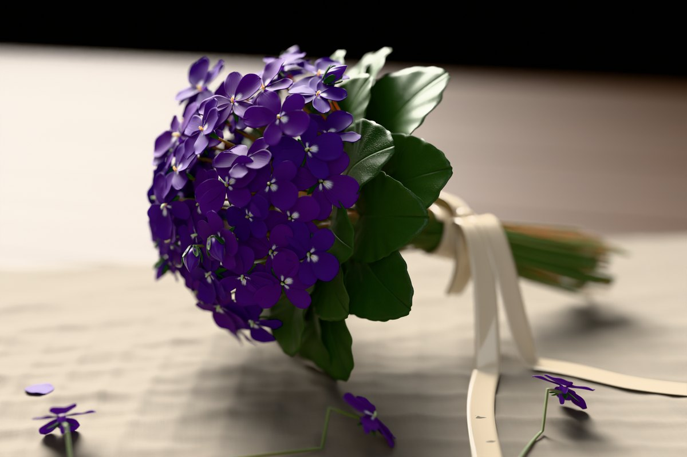
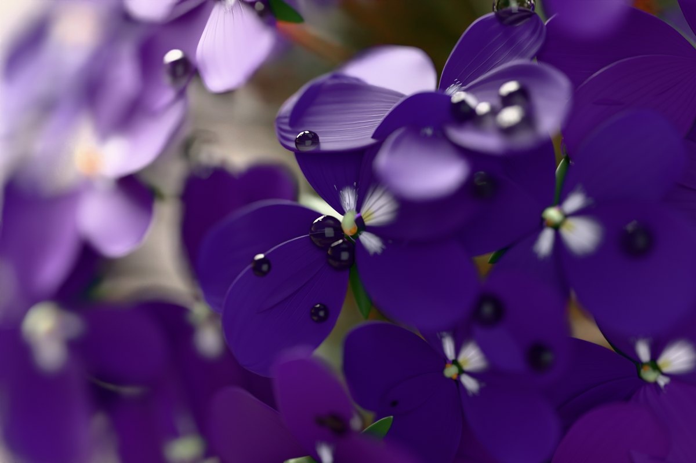
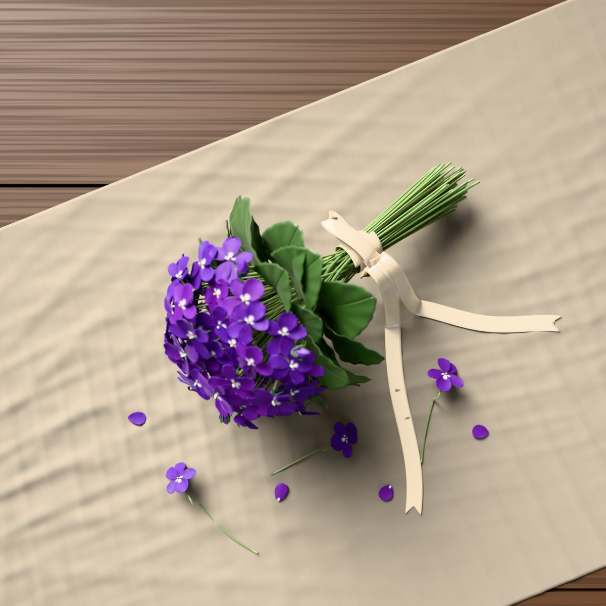
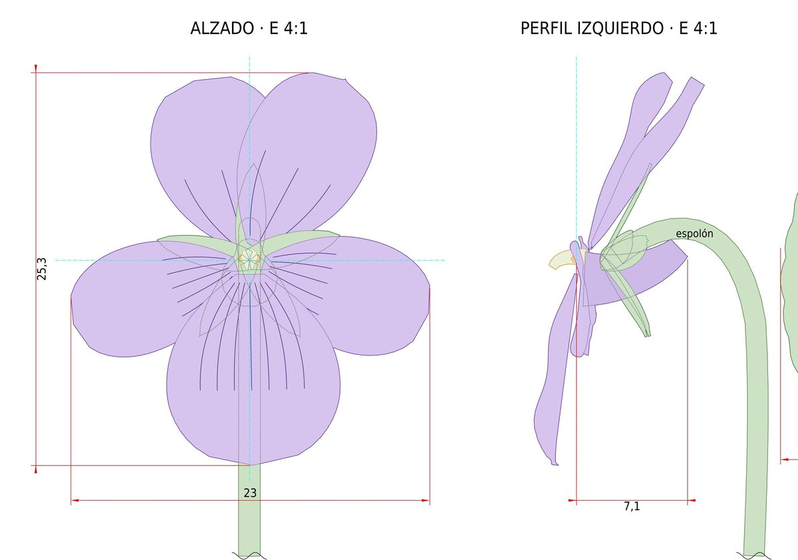

Su perfume juega al escondite
El olor de la violeta lleva iononas, unas moléculas que adormecen el olfato durante un momento. Por eso el perfume parece irse y volver cada vez que te acercas.
Un ramo de violetas que no se marchita, dibujado pieza a pieza y pétalo a pétalo, con todo mi cariño.
El mismo ramo, fotografiado como si fuera de verdad: sobre un mantel de lino, junto a una ventana, con unas violetas sueltas que se escaparon al atarlo.



Cada flor del ramo está construida con estas piezas, a la escala real de una violeta de olor: 23 mm de ancho y 25 de alto. Toca un número para ver qué es cada una.

Desliza la lámina hacia un lado para ver el perfil.
Porque las cosas bien hechas se dibujan antes. Alzado y perfil a escala 4:1, despiece de los pétalos, la hoja a 2:1 y el ramo completo a 1:3, con su lista de piezas y su cajetín, como cualquier plano de la oficina. Toca el plano para verlo en grande.
El olor de la violeta lleva iononas, unas moléculas que adormecen el olfato durante un momento. Por eso el perfume parece irse y volver cada vez que te acercas.
Abre a finales del invierno, entre febrero y abril, cuando casi nada más florece. Es de las primeras flores del año.
En el lenguaje victoriano de las flores, regalar violetas era decir sin palabras: te seré fiel. También hablan de la modestia de quien no necesita hacer ruido para ser querida.